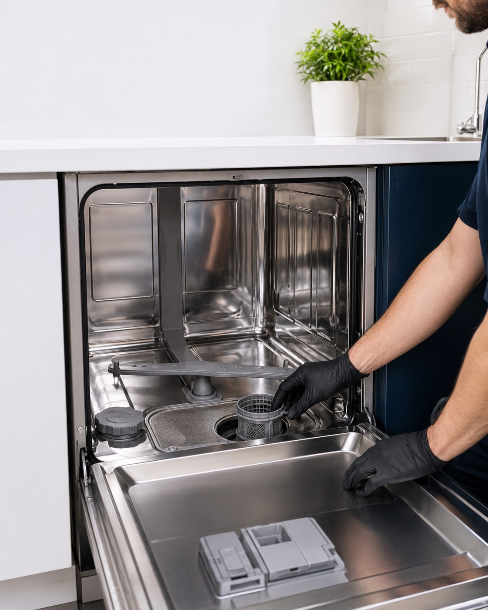

Share the concern
Provide the appliance, brand, ZIP and symptoms.
Dishwasher repair · 04 / 06
When dishes stay dirty, water remains, or a leak appears, the right first step is a careful diagnosis—not a rushed promise.

Common concerns
Symptoms help frame the visit but do not establish a diagnosis.
Helpful before the visit
Bring the detergent type, recent symptoms and model number to the service conversation; those details can help frame the visit.
Additional travel fees apply in certain ZIP codes and are confirmed before booking.
Fee and warranty details ↗The service path
Provide the appliance, brand, ZIP and symptoms.
The office verifies coverage, fee and timing.
The technician explains the diagnosis and proposed repair.
Coverage
Diagnostic-fee and labor coverage is 30 days for the same appliance and same issue. Parts warranties are manufacturer-specific, typically 90 days to one year.
Other services